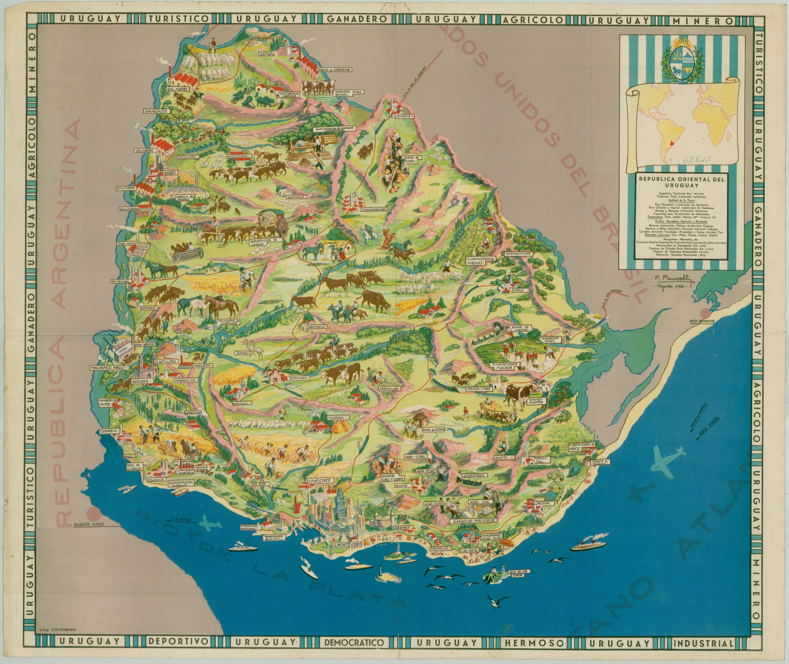

Mapas

GEOGRAFIA
Uruguay, el segundo país más pequeño de América del Sur, limita con Brasil y Argentina y se encuentra a lo largo del Océano Atlántico. La mayor parte del terreno del país es una llanura ondulada con colinas bajas cubiertas de hierba divididas por amplios valles fluviales. Las llanuras, o pampas, están salpicadas de afloramientos de rocas cristalinas, particularmente a lo largo de las crestas. Estos afloramientos han creado largas crestas, conocidas como cuchillas, que actúan como divisiones de cuencas hidrográficas. Dos cordilleras principales se extienden hacia el sur hacia Uruguay desde las tierras altas de Brasil: las colinas de Haedo (Cuchilla de Haedo) en el norte y la Cordillera Grande (Cuchilla Grande) en el este. La Gran Cordillera es una serie de montañas bajas de granito que se extienden en un arco suave desde el norte-noreste hasta el sur-suroeste en el tercio oriental del país. En su mayoría no son más que grandes cerros, y su pico más alto es el cerro Catedral. Con solo 1.683 pies (513 metros) de altura, es el punto más alto de la nación. Las llanuras costeras casi sin rasgos distintivos se extienden como una franja estrecha a lo largo del río Uruguay, el río de la Plata y el área de la laguna oriental. Estas llanuras costeras representan alrededor del 15 por ciento del área del país. Sus fértiles suelos sedimentarios y bajo relieve les confieren un buen potencial agrícola. Las hermosas playas de arena a lo largo de la costa este de Montevideo son las principales atracciones para los turistas.
RIOS Y LAGOS
Uruguay está rodeado de ríos por tres lados. En el norte, el río Cuareim forma la frontera con Brasil por más de 175 millas (280 kilómetros). En la frontera sur de Uruguay se encuentra el Río de la Plata, el gran estuario formado por la unión de los ríos Uruguay y Paraná. El Uruguay, del que el país tomó su nombre, forma el límite occidental y es, con mucho, el más grande y pintoresco de los ríos del país. El Uruguay es navegable hasta el norte de Salto, más de 200 millas (320 kilómetros) más allá de su unión con el río Paraná. Los barcos grandes, sin embargo, no pueden viajar más allá de Paysandú.
El sistema fluvial más grande del país es el Negro, que es navegable solo alrededor de la décima parte inferior de su curso. Con cabeceras en el extremo sur de Brasil, atraviesa Uruguay de noreste a suroeste. La represa del Negro proporciona una fuente de energía hidroeléctrica, así como un enorme lago artificial, el Embalse del Río Negro, que también se llama el Rincón del Bonete Lago. Es la única masa de agua dulce de gran tamaño del país. Varios pequeños lagos de marea bordean la costa. El lago natural más grande de Uruguay es la Laguna Merín, que forma parte de la frontera oriental del país. La mayor parte de la laguna se encuentra dentro de Brasil, donde se la llama Lagoa Mirim.
CLIMA
Uruguay es el único país de América Latina que se encuentra completamente fuera de los trópicos. Con su ubicación marítima y casi 500 millas (800 kilómetros) de costa, el país disfruta de un clima templado, con temperaturas extremas más suaves durante todo el año. En Montevideo, en la costa sur, la temperatura promedio anual es de aproximadamente 61 ° F (16 ° C). La ciudad tiene una temperatura promedio en pleno invierno de aproximadamente 50 ° F (10 ° C) en julio y un promedio en pleno verano de aproximadamente 72 ° F (22 ° C) en enero. Los rangos de temperatura son levemente mayores en el interior y las condiciones más cálidas prevalecen en el noroeste. Las precipitaciones se distribuyen más o menos uniformemente a lo largo del año. La precipitación anual varía desde un máximo de casi 50 pulgadas (127 centímetros) en el noroeste hasta aproximadamente 40 pulgadas (102 centímetros) en el sur.
Sin embargo, la aparente uniformidad de las condiciones climáticas es engañosa, ya que Uruguay está sujeto a extremos por la interacción de diferentes masas de aire y sistemas frontales. Para cualquiera que haya vivido en el país, los calurosos días de verano y las frías noches de invierno son una burla de los promedios estadísticos. Las temperaturas de 100 ° F (38 ° C) son comunes durante los meses de verano, mientras que las temperaturas bajo cero ocurren con frecuencia durante el invierno. En Uruguay se han producido períodos de grandes inundaciones y sequías durante cada década desde la década de 1880.
FLORA Y FAUNA
Las hierbas de la pradera y las plantas herbáceas dominan el paisaje natural. La mimosa, el mirto, el romero y el ceibo de flores escarlatas se encuentran entre las plantas más pequeñas más comunes. En franjas estrechas a lo largo de los ríos, las praderas ceden a matorrales que cubren colinas rocosas y crestas. Los principales árboles y arbustos del país incluyen ombu, aliso, sauce, eucalipto, pino, álamo, acacia y aloe. También son comunes la algarroba, que es la fuente del algarrobo, y el quebracho, cuya madera y corteza se utilizan para curtir y teñir. Las palmas nativas crecen en los valles y a lo largo de la costa sureste.
Pocos de los animales grandes nativos de Uruguay aún viven allí. Entre los mamíferos del país se encuentran armadillos, ciervos, zorros, gatos monteses y capibaras, la especie viva de roedores más grande del mundo. Muchas partes del país tienen lagartos, tortugas y serpientes venenosas. Reptiles parecidos a caimanes llamados caimanes viven en las porciones superiores del río Uruguay. Los flamencos, garzas blancas, grullas y otras aves acuáticas abundan en las lagunas y los periquitos abundan en los cerros. Las otras aves del país incluyen perdices, codornices, colibríes, cuervos y pequeños búhos de madriguera. Las grandes aves no voladoras llamadas ñandúes alguna vez fueron comunes en Uruguay, pero ahora se encuentran principalmente en granjas.